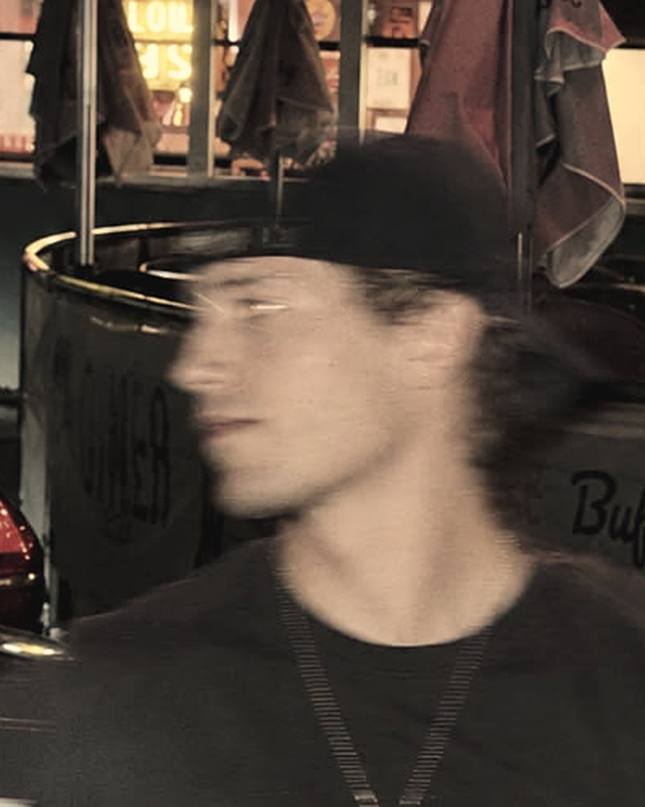
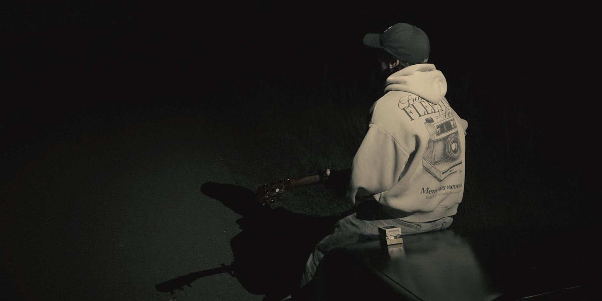
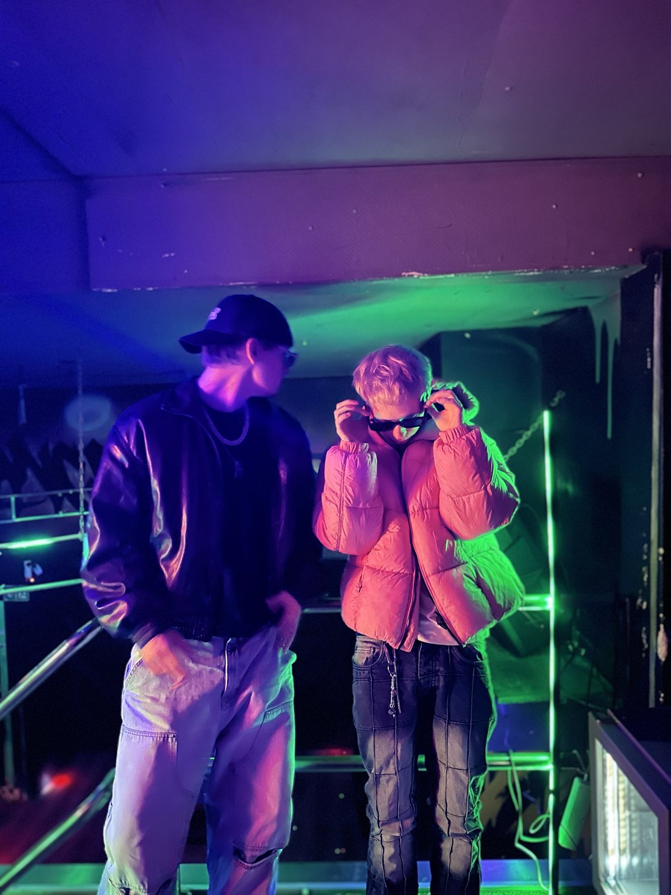

JOELAREDO
- Look
- Denim, Cap, Boots
- Fährt
- Opel Astra F
- Follower


JOELAREDO und PSGOTRICH. Zwei Creator, zwei komplett verschiedene Looks, ein Humor. Auf Instagram und TikTok: Club-Vlogs, Sketche und Reels.

JOE&PS sind JOELAREDO und PSGOTRICH, ein Creator-Duo aus Bremen. Auf Instagram und TikTok veröffentlichen sie Club-Vlogs, Sketche und Reels. Zwei komplett verschiedene Looks, ein Humor – laut, schnell und selbstironisch. Independent, ohne Label.
Weitere Fotos in hoher Auflösung auf Anfrage.
Brands, Produkte, Kampagnen.
Clubs, Festivals, Veranstaltungen.
Features, Formate, Gespräche.
Anfragen bitte per Mail. Wir melden uns.
con.joe-laredo@outlook.de